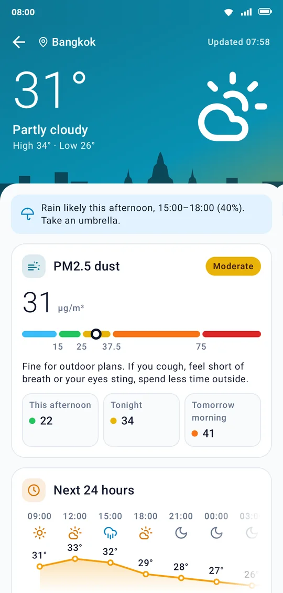
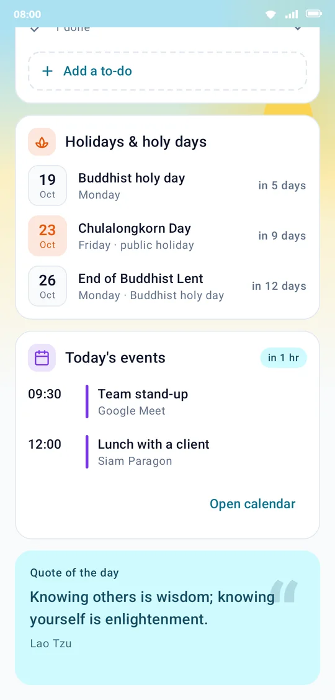
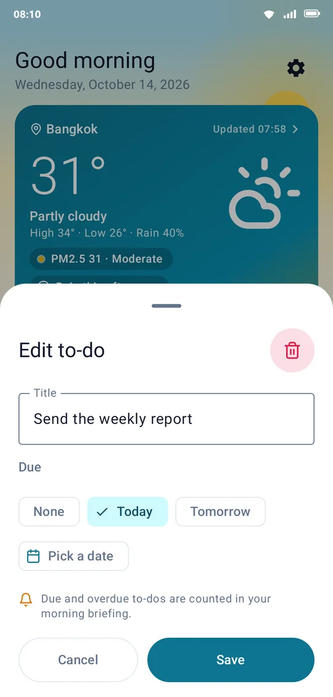
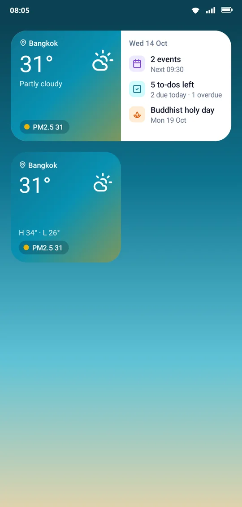
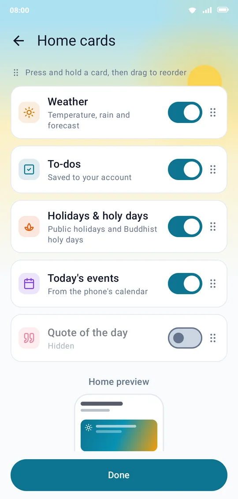

ใช้ได้เฉพาะบัญชีที่ผู้พัฒนาตั้งรหัสผ่านไว้ให้ เช่น บัญชีสำหรับทีมตรวจแอปของ Google Play ผู้ใช้ทั่วไปเข้าสู่ระบบด้วย Google หรือรหัส 6 หลักทางอีเมล ไม่ต้องมีรหัสผ่าน
Daily Briefing Hub puts today's weather and PM2.5, your events, your to-dos, holidays and Buddhist holy days and a quote of the day
on one screen, and sends you a briefing every day at the time you choose. Pick a topic to start.
The first time you open the app, it walks you through these steps. It takes less than two minutes.
1
Sign in
Tap Continue with Google, or type your email and tap Email me a code,
then enter the 6-digit code and tap Verify.
First time here? Your account is created when you enter the code, with no separate sign-up.
2
Create a 6-digit PIN
Enter six digits, then the same six again. The PIN unlocks the app on this phone; it is not your account password.
3
Allow permissions
Tap Allow for each one (calendar, notifications, location), then Get started.
You can also tap Not now and decide later.
No code in your inbox? Check the spam or junk folder. If it is not there, wait 60 seconds and tap Send a new code.
If you mistyped the address, tap Use a different email. Codes expire, so always use the latest one.
What each permission is for, and what happens without it
Permission
Used for
Without it
Calendar
Today's events, read on the phone and never uploaded
The events card offers an Allow calendar button for later
Notifications
The daily briefing at your time
No briefing; turn it on later in Settings
Location
Weather and PM2.5 where you are, from your rough area only
Bangkok's weather, with a Use my location button
2 · Home
Your whole day on one screen
Home lays today out as cards. Scroll down for the rest, and pull the screen down whenever you want fresh data.
Greeting and date. Good morning, good afternoon or good evening, with a sky behind that follows the time of day.
Settings (the gear): theme, language, briefing time, Home cards and your account.
Weather card. The temperature now, the high and low, the chance of rain and the next few hours. Tap it for the full details.
Dust and rain. A PM2.5 chip in its level's colour, and a rain chip when rain is likely today.
To-dos. The ring at the top right shows how many are done out of all of them.
There are five cards: Weather, Today's events, To-dos, Quote of the day, and Holidays & holy days.
Hide the ones you don't use or change their order (see Arrange Home).
With no internet, the weather card says Offline · last update … and shows the last weather it saved.
12345
Home in the morning (sample data)
3 · Weather and PM2.5
Know before you leave whether you need an umbrella or a mask
Tap the weather card on Home to open the details:
Rain alert. When the chance of rain between 07:00 and 21:00 today reaches 40%, the app says when and suggests an umbrella. If it is raining already, it says Raining now.
PM2.5. The value now, its level and colour on the Thai Pollution Control Department's scale, advice, and the outlook for later, such as this afternoon, tonight and tomorrow morning.
Next 24 hours. Temperature and chance of rain every 3 hours, as a chart.
Feels like, humidity, wind and visibility, each with a line on what it means.
Sunrise and sunset, and how long the day is.
Next 5 days: the high, low and chance of rain for each day.
The PM2.5 levels the app uses
Level
µg/m³
The app's advice
Very good
0–15
Great air for being outdoors
Good
16–25
Outdoor activities as usual
Moderate
26–37
As usual, but spend less time outside if you cough, find it hard to breathe or your eyes sting
Starting to affect health
38–75
Spend less time outdoors and wear a dust mask for longer stays
Affects health
76 and up
Stay indoors if you can and wear a dust mask outside
Weather and PM2.5 come from OpenWeather. PM2.5 is modelled rather than measured at a station, so it can differ a little from a station near you.
Seeing Bangkok's weather? Location isn't allowed yet. Tap Use my location on the weather card and allow it. The app only uses your rough area, about the size of a district.

Weather details
4 · Events and special days
Today's events, holidays and holy days
Today's events
The app reads the calendars synced to your phone, such as Google Calendar or Samsung Calendar. Your events are never uploaded.
An event coming up soon shows how long until it starts, such as in 1 hr.
On a free day, the card shows your next event within 14 days.
Tap an event to open it in your calendar app, or tap Open calendar.
Add or change events in your calendar app; when you come back, the list is up to date.
Holidays & holy days
The next three public holidays and Buddhist holy days, with how many days away they are.
A public holiday has a filled saffron date; a plain holy day has an outlined one.
When tomorrow is a holiday or holy day, the daily briefing tells you.
Quote of the day
A new one each day, in the app's language.

Special days, events and the quote
5 · To-dos
Write it down, give it a date, tick it off
Add a to-do
Tap + Add a to-do at the bottom of the to-dos card.
Type the title.
Pick a due date: None, Today, Tomorrow, or Pick a date from a calendar.
Tap Save.
Tick, edit and delete
Done: tap the circle, then Done. The to-do moves into N done at the bottom of the card; tap that line to show or hide them.
Changed your mind: tap the circle of a done to-do, then Not done.
Edit: tap the title, change the title or due date, then tap Save.
Delete: tap the title, tap the red bin at the top right, then confirm Delete. This can't be undone.
Grouped by due date
Once a to-do has a due date, the card splits into Overdue, Today and Later.
Overdue to-dos carry a red label with how late they are. To-dos due today and overdue ones are counted in your morning briefing.
Works offline. Add, tick and edit as usual; the app syncs when you are back online. To-dos are saved to your account, so you see the same list on every phone you sign in on.

Editing a to-do (tap its title)
6 · Daily briefing
A briefing every day, even with the app closed
Every day at your time (08:00 to begin with) the app sends a notification that sums up your day. Pull it down to see all of it, and tap it to open the app. It has:
The weather now and today's high
PM2.5 and its level
When rain is likely, if it is
How many events you have and when the first one starts
To-dos due today and overdue
Whether tomorrow is a holiday or holy day
Change the time, or turn it off
SettingsDaily briefingBriefing time, pick a time and tap OK.
To stop the briefing, turn off Daily notification.
No briefing?
Check that Daily notification is on. If the phone blocks the app's notifications, Settings shows a red note with an Open phone settings button.
If the server's signal does not get through on time, for example while offline, the app writes the briefing itself within about 15 minutes of your time.
If it is often late, set the app's battery use to Unrestricted in the phone's app settings, and keep it out of any list of sleeping apps.
Daily Briefing Hub · 08:00
Good morning, your briefing is ready
31° Partly cloudy · high 34°
PM2.5 31 · Moderate
Rain likely 15:00–18:00, take an umbrella
2 events from 09:30
2 to-dos due today · 1 overdue
The briefing pulled down in full (sample data)
7 · Home-screen widgets
Your day without opening the app
There are two widgets:
Today (4×2): weather, PM2.5, events, to-dos and any special day in the next 7 days.
Weather (2×2): weather and PM2.5 where you are.
Add a widget
Press and hold an empty spot on your phone's home screen.
Tap Widgets.
Find Daily Briefing Hub and choose Today or Weather.
Tap Add, or drag it where you want it.
Menu names vary a little between phone makers.
Why only numbers? A widget sits outside the PIN lock, so anyone who sees your screen can read it. By default it shows counts only, such as "2 events" and "5 to-dos left".
To see event and to-do names, turn on SettingsHomeShow names on the widget.
It turns off again when you sign out.
Widgets refresh every hour and each time you leave the app. Tap one to open the app, which asks for your PIN as usual.

The Today widget (top) and the Weather widget (bottom)
8 · Arrange Home
Choose what you see, and what comes first
Open SettingsHomeHome cards.
Show or hide a card with its switch. At least one card stays on Home.
Reorder: press and hold a card, then drag it up or down.
See it at once: the Home preview below follows every change.
Tap Done when you are finished.
The order and hidden cards are saved to your account, so Home looks the same on every phone you sign in on.

Home cards
9 · Settings
Everything in Settings
Tap the gear at the top right of Home.
Appearance
ThemeSystem, Light or Dark
LanguageSystem, ไทย or English. The briefing and widgets follow it too.
Show names on the widgetOff: the widget shows counts only
Daily briefing
Daily notificationTurn the daily briefing on or off
Briefing timeWhen you want the briefing
Account
Sign outRemoves the PIN on this phone too; your account data stays
Delete accountDeletes your account and all its data for good (read first)
About
User guideOpens this page
Privacy policyWhat the app keeps about you and how to delete it
The dark theme in the evening
10 · PIN and account
Locking the app, signing out, deleting your account
PIN
The app asks for your PIN each time it starts, and when you come back after more than 5 minutes away.
You have 5 tries. After the fifth wrong PIN the app signs you out to keep your data safe. Nothing in your account is lost: sign in again and create a new PIN.
Forgot your PIN? Tap Forgot PIN? on the PIN screen, then Sign out. Sign in again with Google or an email code, and create a new PIN.
The PIN stays on the phone. Each phone has its own.
Sign out
SettingsAccountSign out. The app removes the PIN and the data it keeps on this phone. Your account data stays, and it is all back when you sign in again.
Delete your account
SettingsAccountDelete account, then confirm. All your to-dos, your settings and Home cards, your briefing time and send log, and the account you sign in with are deleted from the server at once.
This can't be undone. Events in the phone's calendar are not touched. If you no longer have the app, the privacy policy says how to have your account deleted.
11 · Several phones, offline
One account on several phones
Sign in with the same account on another phone. Some things follow you, and some stay on each phone.
Follows you
To-dos
Briefing time, and whether the briefing is on
Card order and hidden cards
This phone only
PIN
Theme and language
Names on the widget
Events (read from each phone's calendar)
Location and the last weather
Without internet
The app opens as usual with the last weather it saved (marked Offline), and you can add, tick and edit to-dos. It syncs when you are back online.
Updates
When Google Play has a new version, the app asks whether to update. If you agree, it downloads in the background while you carry on. When it is done, Home shows this banner: tap Restart to finish.
If now is not a good time, the app asks again in 3 days.
A new version is readyRestart the app to finish updating
Restart
12 · Questions
Common questions
What is "Sign in with a password" for?
It works only for accounts the developer has given a password, such as the one for Google Play's review team. Everyone else signs in with Google or a 6-digit email code; no password is needed.
Why don't I see my events?
Check that the calendar is allowed. If not, the events card shows an Allow calendar button.
The calendar account has to be synced to the phone. Open your calendar app and check that the event is there.
Calendars turned off in your calendar app, and cancelled events, are not shown.
PM2.5 differs from another app
This app uses OpenWeather's modelled PM2.5 for your rough location, not the nearest measuring station, so the numbers can differ a little. The trend is usually the same.
The widget shows no names, or says "Open the app to sign in"
Counts only is the default, for privacy. Turn names on in SettingsHomeShow names on the widget.
"Open the app to sign in" means this phone is signed out: open the app and sign in again.